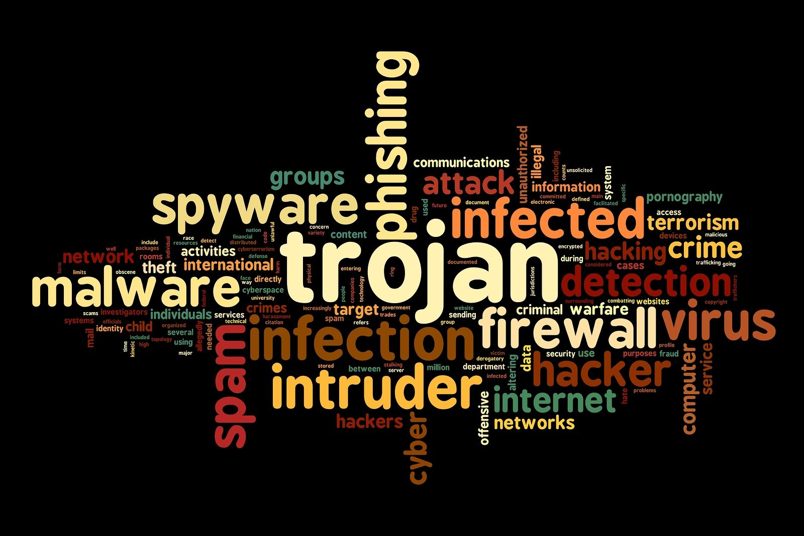
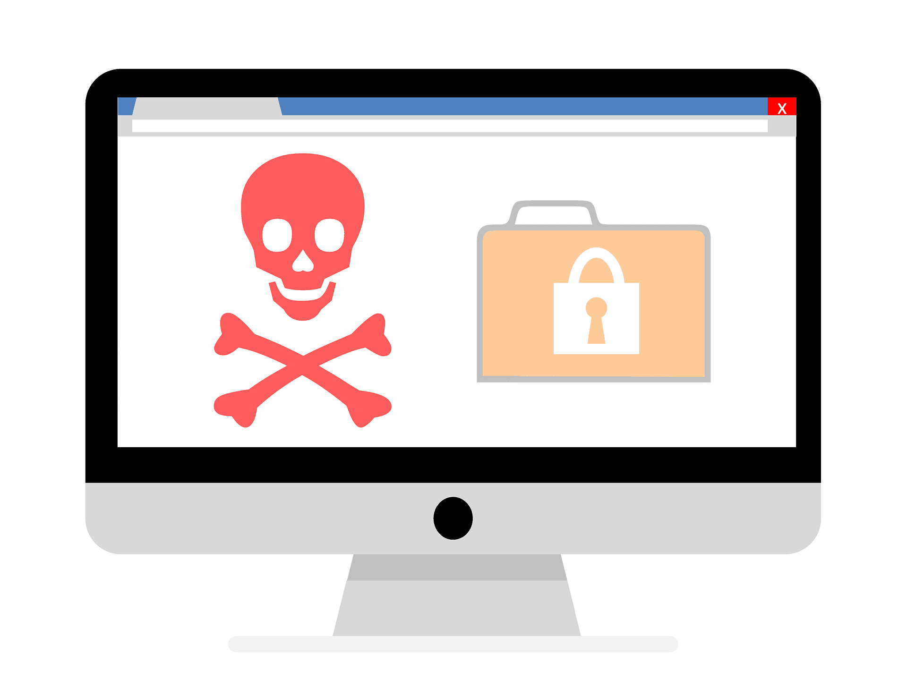

Optimiza tu computadora en sencillos pasos
¿Por qué optimizar?
Normalmente cuando contamos con un computador tratamos de cubrir todas nuestras necesidades instalando todo tipo de software que en su mayoría no es original y proviene de sitios web de descargas no seguros.
Existe una serie de pasos para optimizar de forma efectiva nuestra computadora, pero antes veamos cuales son los errores que con frecuencia cometemos a diario.
Errores comunes al instalar software
Acaparar software
Esto lo cometen muchos al querer tener una herramienta para cada problema, que sinceramente algunos no son problemas. Realmente no necesitas instalar todo el software que encuentres por la web simplemente adquiere únicamente lo que necesites.
Descargas Dudosas

Principalmente ocurre cuando descargamos cualquier tipo de software de páginas de internet no seguras o instalando los famosos "crack" para la activación de licencias de programas originales. De igual manera pasa con los cd que se compran en establecimientos ambulantes.
Instalar con virus un antivirus

Hablando anteriormente de los "crack", estos son usados comúnmente al instalar un antivirus. Está bien que se quiera proteger un computador con un antivirus, pero no se puede confiar nada si se usó un crack. Simplemente no sirve el antivirus, queda más vulnerable tu computadora.
Tips para optimizar tu computadora si es nueva.
- 1) No instales software pirata o de dudosa procedencia.
- 2) Instala únicamente el software original que necesitas.
- 3) Usa alternativas gratuitas al software original.
- 4) Si usas Windows, la protección que brinda Windows Defender es suficiente.
- 5) Puedes descargar software y aplicaciones gratuitas desde Sitios Oficiales como Microsoft Store.
Pasos para limpiar y optimizar tu computadora.
- 1) Elimina todo el software no original instalado en tu computadora.
- 2) Realiza un análisis completo a tu computadora, ya sea con un antivirus original de paga o con Windows Defender.
- 3) Mantén actualizado tu antivirus todo el tiempo y coloca en cuarentena todas las amenazas.
- 4) Verifica que tu licencia de Windows este activa, si no lo está tu computadora será más vulnerable.
- 5) Usa herramientas útiles como CCleaner para la limpieza de archivos dañados o carpetas vacías.
- 6) Si el problema no se resuelve, lo mejor será que formatees completamente borrando tus archivos.
- 7) Si formateaste el computador, sigue los "tips para optimizar tu computadora si es nueva".